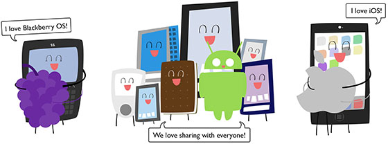
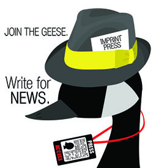
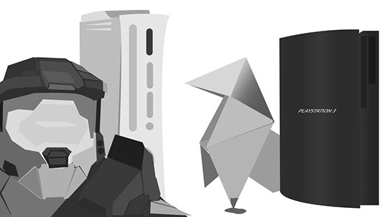
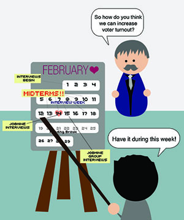

IMPRINT
Imprint is the Official Undergraduate Newspaper at the University of Waterloo. Through Imprint, I have developed my organizational skills, as well as my design and graphical skills. As a part of the Imprint staff, I have also been in the editorial board twice, once as the Science & Technology Assistant Editor - where I learned how to use InDesign and layout pages, and as the Graphics Assistant Editor.
Android, Blackberry, and iPhone

This was a graphic showing the flexibility of Google's Android software, in comparison to Apple's iOS and BlackBerry's OS'. The Android is surrounded by a variety of different phones, all which work with the Android's new OS, Ice Cream Sandwich, while the Apple logo is seen hugging the iPhone and the BlackBerry hugging the BlackBerry phone.
House Ad

In the paper we will often post our own ads asking volunteers to help us write and create the paper. This was one particular ad created for the News section. A dominant animal on the Waterloo campus is the goose, and we wanted to play on the cliche, "If you can't beat them, join them."
Game Exclusiveness

This particular graphic depicts the exclusiveness of certain games to certain consoles. To the left is Master Chief, one of the charcacters from the franchise, Halo, in front of an Xbox 360. To the left is the origami symbol depicted on the cover of Heavy Rain, a game exclusive to the PlayStation 3.
Editorial Comic

Every week an editorial comic is drawn for the newspaper, the ideas are usually generated as a team, and then illustrated by myself. Depicted is one editorial comic suggesting that administration was out of touch with how to increase voter turn out in the undergraduate population. This pokes fun at the idea that elections should be held during the busiest time in the semester (which had during that particular semester).